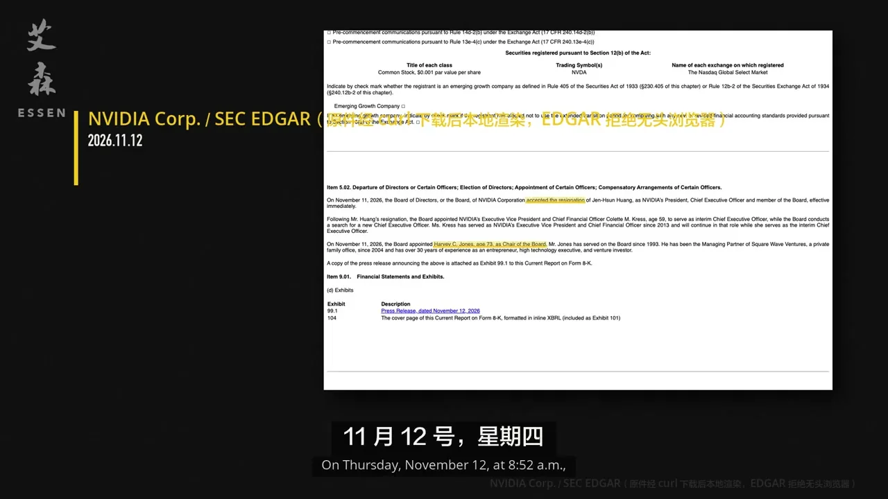
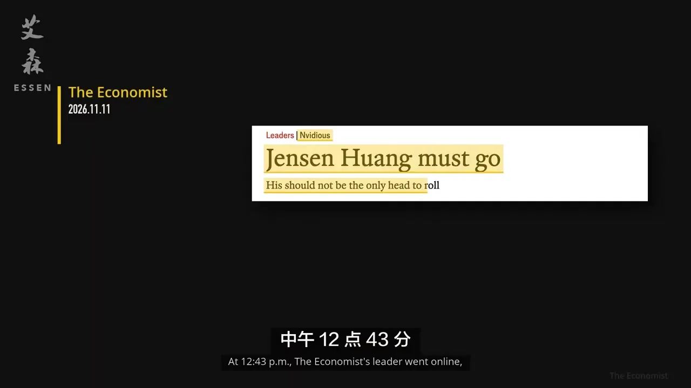
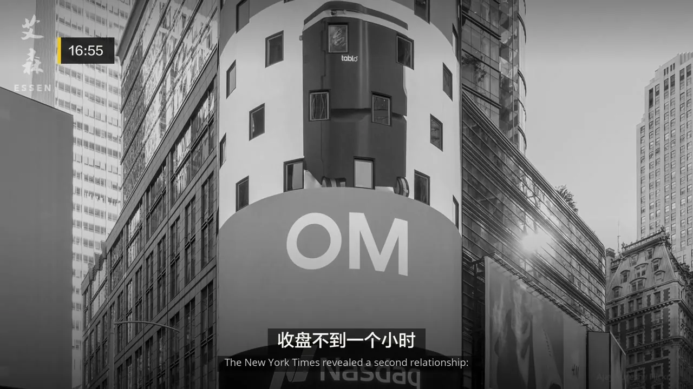
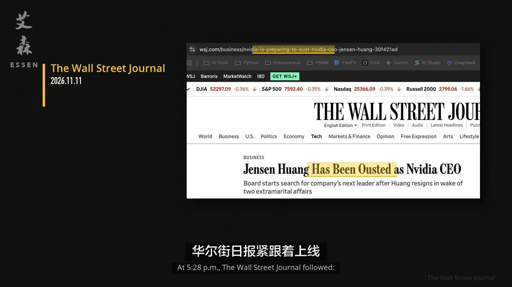

33年创始人，两周被扫地出门：谁扳倒了黄仁勋？
英伟达权力交接、华盛顿合围与 AI 芯片地缘政治的深度拆解
〇、先把事实与解读分开
已确认的硬事实：英伟达董事会于 2026 年 11 月 11 日接受黄仁勋辞去总裁、CEO 及董事职务，生效即时；CFO 科莱特·克雷斯（Colette Kress）出任临时 CEO；1993 年起任董事的哈维·琼斯（Harvey C. Jones）成为公司首位董事会主席。SEC 在 11 月 12 日 08:52（美东）接收 8-K，英伟达同日发布新闻稿。
仍需谨慎的部分：视频的主线不是“谁按公司章程完成交接”，而是“谁把政治、舆论与公司治理压力推到董事会桌前”。间谍指控、婚外情报道、国会动机、特朗普交易计算，都属于正在发展的新闻与媒体叙事；截至本页发布，公开信息尚未显示黄仁勋本人已被起诉或制裁。

一、两周时间线：从“间谍报道”到“接受辞呈”
报道称，与黄仁勋关系密切的中国女商人黄乐（Huang Le，音译）被指向北京传递情报；特朗普政府早已收到简报但未行动。艾森强调：六位记者联名、两位跑白宫条线，真正的读者不是硅谷，而是白宫。
华尔街日报跟进报道；新加坡内政部随后澄清，称相关调查聚焦服务器采购申报，并非“间谍活动”。特朗普在海湖庄园称希望黄仁勋“一切都好”。从 10/31 到 11/3 投票前，重磅报道突然安静。
片中判断：选前特朗普控制白宫与国会，护住黄仁勋的政治成本较低；民主党大胜后，国会调查、传票与“科技巨头—特朗普关系”议题同时升温，保护伞开始漏雨。
众议院三委员会主席要求黄仁勋 11/18 闭门说明；民主党参议员舒默把矛头指向“特朗普保护朋友”；纽约时报从“中国间谍”到“疑似中国间谍”的标题措辞，被片中作为“先定罪、后补救”的证据。
《经济学人》12:43 上线“黄仁勋必须走人”社论；16:00 收盘英伟达仍涨 2.87%；16:55 纽约时报再曝第二段关系；17:28 华尔街日报称董事会准备罢免；盘后跌幅最深约 8.6%。当晚董事会开会。
08:52 SEC 接收 8-K：接受黄仁勋辞呈，科莱特·克雷斯任临时 CEO，哈维·琼斯任首位董事会主席。路透社随后又报道第三位亲密关系对象；华尔街日报一边回顾创业史，一边评估“AI 热潮最好的公关资产沉没”。

二、艾森的核心解释：一场五方合围，而不是单一丑闻
视频最有价值的部分，是把“婚外情为什么突然变成死罪”拆成一个多玩家博弈：婚外情本身很少直接杀死一位业绩极强的 CEO，真正让它变成死罪的是先前扣上的“国家安全 / 间谍”帽子，以及这个帽子在选举后突然有了政治用途。
| 玩家 | 片中判断的真实目标 | 使用的工具 | 得到什么 |
|---|---|---|---|
| 情报与安全口 | 把黄乐事件纳入“中国渗透”框架 | 匿名官员放话、媒体简报、国家安全话语 | 让私德丑闻升级为忠诚测试 |
| 共和党对华鹰派 | 收紧对华芯片出口 | 国会听证、传票威胁、党团联名 | 打掉最积极的 H200 游说者 |
| 民主党 / 进步派 | 把黄仁勋变成特朗普的“罪证” | 国会监督、文件保全、25% 关税合宪性追问 | 削弱科技富豪与特朗普联盟 |
| 主流媒体与评论版 | 左右两翼各自完成叙事定调 | 标题措辞、社论、讽刺专栏 | 把“疑似”磨成公众印象中的“坐实” |
| 英伟达董事会 | 止损、收回创始人方向盘 | 独立调查、章程权力、继任安排 | 快速切割风险，并把治理权收归董事会 |
这把刀为什么快？因为黄仁勋站得太近：既能影响下一代 AI 芯片路线，又能与台积电、韩国存储厂和全球数据中心资本协同，还能直接进白宫影响对华政策。一个人同时握着技术、资本、制造与政治四条线，是英伟达的战略资产；一旦出事，也变成最容易被两党共同攻击的“高价值节点”。
三、公司治理：他为什么挡不住 6 张票？
艾森把 11 月 11 日夜间称为“董事会收网”。按片中梳理，英伟达章程下董事会过半数即可免除 CEO；但没有正当理由要移除一名董事，需要三分之二股东投票。因此黄仁勋若要彻底离开董事会，必须自己签署辞任董事。
关键在于：黄仁勋只有约 3.58% 股份，英伟达又是一股一票，没有给创始人保留超级投票权。平时这从不是问题——因为业绩、行业声望与组织信任替他投票；但当外部政治压力、媒体叙事与董事会风险判断同时转向时，他没有一张制度上的“否决牌”。
这也意味着，英伟达的交接不是一次“经营失败后的被动换帅”，而是典型的政治冲击触发治理重估：董事会四天前还说“没有理由认为国家安全或公司机密受损，并对黄仁勋及团队有信心”，四天后便接受辞呈。变的未必是证据，更可能是保住他的价格。
四、特朗普变量：从保护伞到“什么都不做”
视频对特朗普的刻画很冷：不是公开翻脸，而是在最需要他的时候重新计算成本。选举前，黄仁勋能替白宫吸引投资、谈成对华芯片生意、陪同访华；选举后，替他撑伞意味着得罪国会、情报机构与媒体，还要消耗本就紧张的第二期政治资本。
时间线里最有信息量的是措辞变化：
| 日期 | 特朗普公开口径 | 信号 |
|---|---|---|
| 11/8 | “我只知道他是个好人，他做得非常出色”；不后悔此前未行动 | 仍试图以个人背书覆盖国家安全叙事 |
| 11/9 | 称亲自通话，相信黄仁勋不知道对方是间谍；“后面交给 FBI” | 从个人担保切换为程序托词 |
| 11/10 | 称自己“刚刚才知道这些指控” | 与“一年前已听简报”的报道正面冲突，开始切割 |
| 11/11 | 董事会讨论去留当天，特朗普一言不发 | 不消耗政治资本，即是最清楚的表态 |
| 11/12 | 黄仁勋辞职数小时后，发帖称“能接替他的只有苹果蒂姆·库克” | 把事件包装成传奇交接，而非政治失败 |
五、媒体、证据与“身份变量”：视频里最刺耳也最值得警惕的一段
艾森用了相当篇幅批评标题与副标题如何塑造公众印象：主标题守住“疑似”，副标题却把“被情报机构认定 / 确认”写得更重；网页先入为主，隔夜再补“疑似”。这种做法并非只影响黄仁勋个人，而是决定了一场国家安全叙事能否在证据公开前完成定罪。
视频还把此事放进美国华裔遭遇的“忠诚测试”历史：李文和案、陈刚案、司法部“中国行动计划”的终止与反思。艾森的尖锐之处在于：政客很少说“因为族裔”，他们只说“中共”；种族被翻译成国家安全之后，就既无法指控，也难以反驳。这也是为何黄仁勋在婚外情道歉信里要写“我爱我们的国家”“我为自己是美国人而自豪”——在视频看来，这不是写给妻子的，是写给忠诚测试机器的。


六、真正会失去什么：不是产能，而是跨体系信任网络
黄仁勋当然不是不可替换的单点故障：GPU 架构、CUDA 生态、供应链与数据中心客户都有惯性，第二天芯片照样出货。艾森也不认为美国会立刻在 AI 竞赛中输给中国。真正难替换的，是他能把四套语言讲成同一套行动的能力：
- 技术语言：决定下一代 AI 芯片与系统架构往哪里走；
- 资本语言：让全球数据中心巨头围绕同一路线投入数千亿美元；
- 制造语言：与台积电、韩国存储、封装测试伙伴形成长期产能协同；
- 政治语言：进入白宫，直接影响对华芯片许可、关税与出口管制。
临时 CEO 科莱特·克雷斯是财务与运营高手，适合稳定资本市场、客户承诺与内部秩序；但“稳定器”不等于“路线缔造者”。如果继任者无法同时维持亚洲供应链、美国政府与中国市场之间的微妙平衡，英伟达的产品路线图或许不断，地缘政治腾挪空间会变窄。
七、给 IT / 产业链决策者的五个动作
1. 把“路线图连续性”与“路线制定者风险”分开定价。短期采购看产品、库存与合同承诺；中期规划看董事会继任、关键架构负责人与政府关系团队是否稳定。克雷斯稳住财务不等于 Blackwell/Rubin 的生态战略不会调整。
2. AI 基础设施预算加入政治波动准备金。H200 的“先回美国检查 + 25% 关税”说明，对华芯片政策已经不是一次性许可，而是可持续调整的政策工具。数据中心、云服务商与车企智算采购都要做“许可收紧 / 延迟 / 区域绕行”三情景。
3. 供应链多元化不等于只看产能。黄仁勋真正稀缺的是跨台积电、韩国存储、封测厂、云厂商与政府之间的信任网络。替代供应商务必评估：对方是否也能把工艺、产能、资本与政策节奏串起来，而不只是报价更低。
4. 地缘合规要前置到合同层。围绕高性能 GPU、先进封装、HBM、高速互连的采购与联合研发，应把出口管制变更、最终用途审查、数据与模型跨境、政府审计条款写进主合同，而不是出问题后靠法务补丁。
5. 对“国家安全叙事”建立证据档案。无论是企业高管、海外华人工程师，还是跨境供应链团队，涉及敏感技术交流时，要有可审计的合作记录、访问边界、披露流程和法务响应。视频里最沉重的教训是：当叙事跑在证据前面时，程序清白就是唯一护城河。
八、接下来两周看什么
黄仁勋是否按 11/18 安排闭门说明；如果缺席，共和党议员已公开表示可发传票。注意问题会从个人私德扩展到 H200 许可、25% 关税与对华出口文件。
英伟达独立调查是否公布“国家安全或公司机密是否受损”的结论；若没有结论，董事会的四天转向会被持续追问。
克雷斯是稳定过渡，还是正式候选？外部人选（苹果库克只是特朗普式玩笑，不是董事会声明）与内部产品/架构负责人之间的选择，决定英伟达进入“财务治理”还是“技术治理”时代。
台积电、韩国存储、封测与服务器伙伴是否继续按原路线加码。真正的信号不是新闻稿，是 2027 年产能预订、预付款与联合扩产是否变化。
H200 许可、25% 关税安排、后续 B 系列 / Rubin 对华政策是否会因国会压力收紧；北京如何反制或利用舆论窗口，也会反过来影响美企游说空间。
尾声：黄仁勋输掉的不是财富，而是“决定命运的权利”
按片中数据，黄仁勋仍持有约 3.58% 的英伟达股份，价值千亿美元量级；他失去的不是股票，而是决定这家公司命运的权利。33 年，他赢下技术路线、资本市场与行业洗牌，最后却输给一场华盛顿权力游戏。对企业管理者的真正警示不在于私德，而在于：当公司成为国家战略资产，创始人的个人政治资本也会被计入系统风险。
对旁观者而言，这件事还有另一层不舒服的启示：一个人要成功到什么程度，才不必反复证明自己属于这个国家？当血统、标签与政治纯洁开始替代理性、契约和实力，受损的不只是某一位 CEO，而是整个创新系统的可信度。
来源：艾森 Essen《33年创始人，两周被扫地出门：谁扳倒了黄仁勋？》（2026-11-13，YouTube，47:11；本地 Whisper large-v3-turbo 中文语音转写整理，专名以原片与公开文件为准）；NVIDIA 2026-11-12 新闻稿与 SEC 8-K（2026-11-11 event date / 2026-11-12 filing）；BBC、CNN、TechCrunch、Fortune 等公开报道。视频截图均为原片画面。本页为内容整理与产业解读，不构成投资建议。